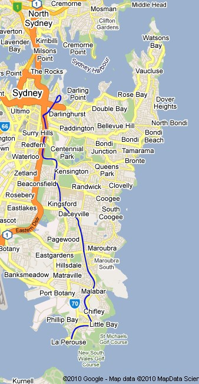

Sydney, New South Wales La Perouse Tramway
Ver 1.0
Route design by Joseph Spinella
Overview
This route was the first Australian route for MSTS, first released in June 2002, barely 12 months after the release of MSTS itself.
This route is a pre-war recreation of the Circular Quay - Bondi tramline in Sydney, New South Wales.

Prototype Operator: New South Wales Government Railways & Tramways,